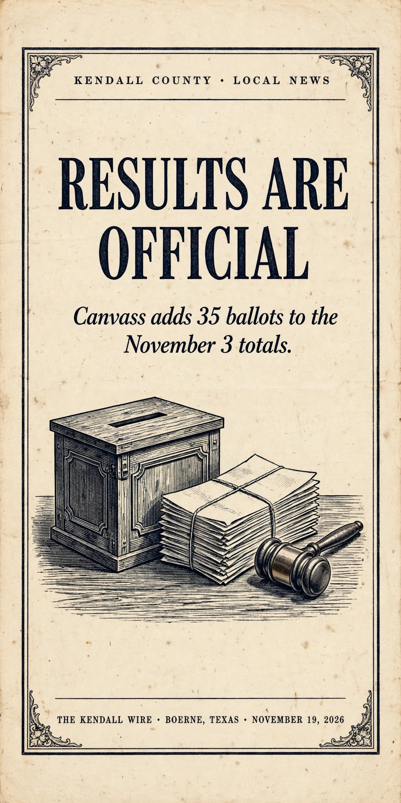

Canvass adds 35 ballots as court makes November 3 results official
The November 3 election results in Kendall County are official.
Commissioners Court canvassed the returns at a special called meeting on Wednesday, November 18, and approved the canvass 4-0. County Judge Stolarczyk made the motion and Commissioner Chapman seconded it. The Precinct 4 commissioner was absent. The meeting adjourned at 3:52 p.m.
The official count is 26,311 ballots, 35 more than the unofficial total reported on election night. The added ballots were 26 mail ballots counted after election night, bringing the mail total to 1,151, and 9 provisional ballots counted out of 84 cast. The remaining 75 provisional ballots and 6 mail ballots were rejected. In-person voting was unchanged at 25,151 ballots: 19,098 early votes and 6,053 cast on Election Day.
Turnout was 65.11 percent of the county's 40,410 registered voters.
Elections Administrator Staci Decker told the court there were no anomalies. The post-election hand-count audit was completed and matched the electronic results, and the early voting ballot board reconvened on November 10 to finish the late and provisional ballots.
The canvass was conducted under Section 67.004 of the Texas Election Code. With the court's approval, the county's returns are entered in the election register and sent to the Secretary of State, and the results posted by the county now read as official.
Sources
- Kendall County AgendaCenter, November 18, 2026 Special Called Meeting agenda and backup (canvass item 3, Election Summary, Official Election Reconciliation)
- Kendall County, Official Election Reconciliation, November 3, 2026
- Kendall County, Preliminary Election Reconciliation, Unofficial Totals, November 3, 2026
- Kendall County Commissioners Court Special Called Meeting video, November 18, 2026